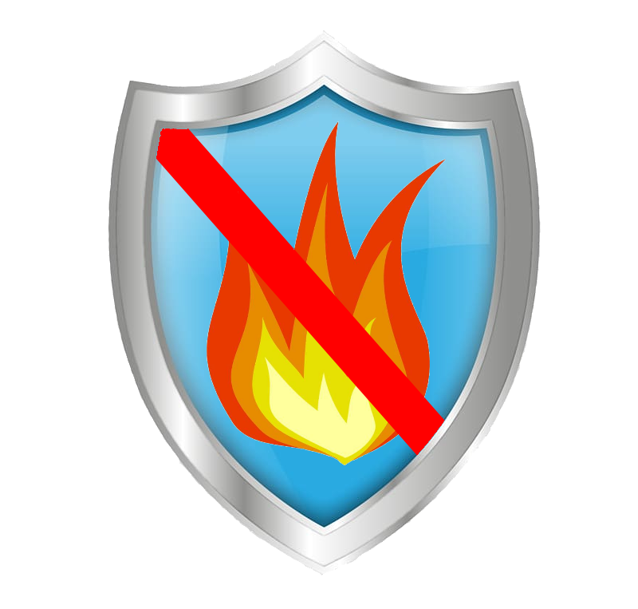

Вітаємо в інтернет-магазині FireDef

Про компанію
Магазин FireDef - це український інтернет-магазин ,який спеціалізується на продажі засобів захисту дому від різного роду небезпеки.
У нашому магазині представлені такі категорії товарів як Противопожежні , Противогазові , Загальнобезпечні.
У нас ви можете придбати передові та найкращі товари , за вигідною ціною.FireDef був створений 2021 року.
Наш інтернет-магазин постійно розвивається і добавляє нові товари.
Чому вартує обладнати дім пристроями безпеки?
Система попередження пожеж
Пожежна профілактика - це комплекс заходів, спрямованих на попередження пожеж, запобігання розповсюдженню вогню, передбачення можливих шляхів евакуації людей, тварин і матеріальних цінностей та створення умов для швидкої ліквідації пожеж .
До системи пожежного захисту відносяться технічні та організаційні заходи.
Технічні заходи - передбачення необхідної кількості виходів, коридорів потрібної ширини, застосування системи протидимового захисту, виконання будівельних робіт з вогнетривких матеріалів, дотримання протипожежної відстані між будівлями, обладнання об'єкту засобами пожежогасіння, влаштування пожежних драбин, веж спостереження, водоймищ, під'їздів до них і до будівель, пожежного зв'язку і сигналізації .
Організаційні заходи - це організація навчання працюючих та інших категорій населення правилам пожежної безпеки; розробка інструкцій про правила роботи з пожежонебезпечими матеріалами та про дії персоналу під час пожежі
Одним із принципів у системі попередження пожеж є положення про те, що пожежа можливе лише за наявність трьох факторів: горючої речовини, окислювача та джерела запалювання . Крім того, необхідно, щоб горюча речовина була нагріта до необхідної температури і знаходилась у відповідному кількісному співвідношенні з окислювачем, а джерело запалювання мало необхідну енергію для початкового імпульсу (запалювання) . Окислювач разом з горючою речовиною утворює так зване
Система попередження пожеж виключає два основних напрямки: запобігання формуванню горючого середовища і виникненню в цьому середовищі (чи внесенню в нього) джерела запалювання
Запобігання формуванню горючого середовища досягається: застосуванням герметичного виробничого устаткування; максимально можливою заміною в технологічних процесах горючих речовин та матеріалів негорючими; обмеження кількості пожежо- та вибухонебезпечних речовин при використанні та зберіганні, а також правильним їх розміщенням; ізоляцією горючого та вибухонебезпечного середовища; організацією контролю за станом середовища в апаратах; застосуванням робочої та аварійної вентиляції; відведенням горючого середовища в спеціальні пристрої та безпечні місця; використанням інгібуючих (хімічно активні компоненти, що сприяють припиненню пожежі) та флегматизуючих (інертні компоненти, що роблять середовище негорючим) доповнювачів
Запобігання виникненню в горючому середовищі джерела запалювання досягається: використанням устаткування та пристроїв при роботі яких не виникає джерел запалювання; використання електроустаткування, що відповідає за виконанням класу вибухонебезпечної суміші; обмеження щодо сумісного зберігання речовин та матеріалів; використання устаткування, що задовольняє вимогам електростатичної іскробезпеки; влаштуванням блискавкозахисту; організацією автоматичного контролю параметрів, що визначають джерела запалювання; заземленням устаткування, видовжених металоконструкцій; використання при роботі з легко займистими речовинами інструментів, що виключають іскроутворення; ліквідацією умов для само спалахування речовин і матеріалів